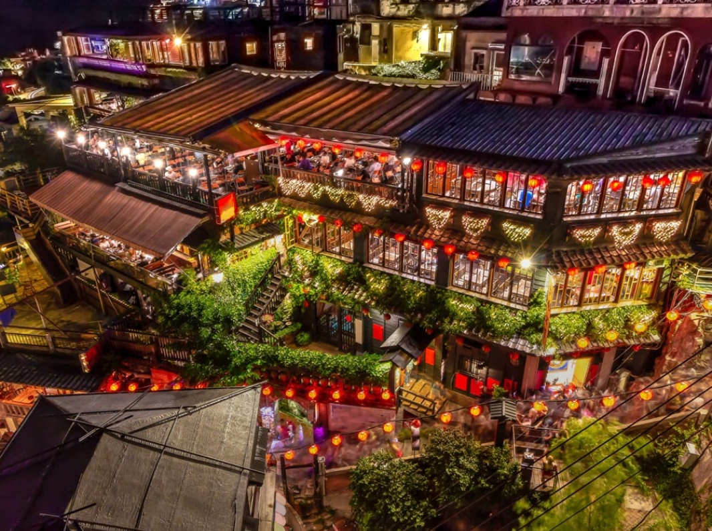
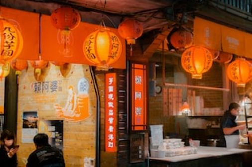
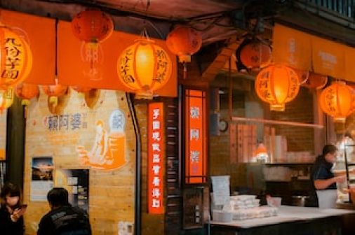
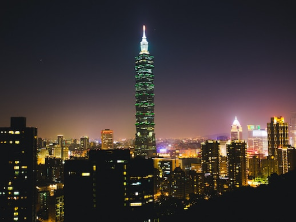
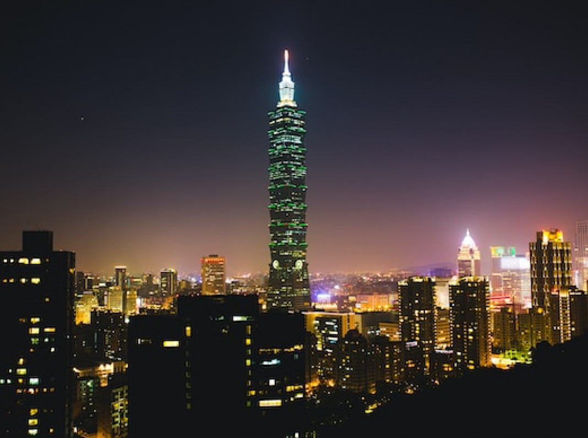
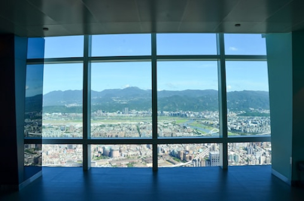
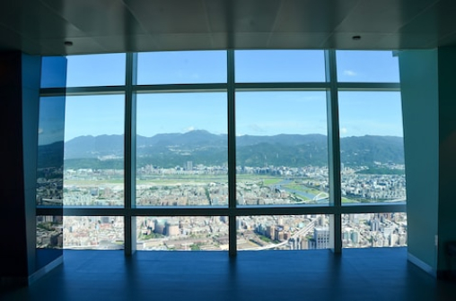
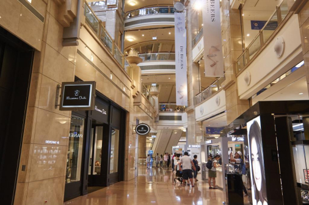
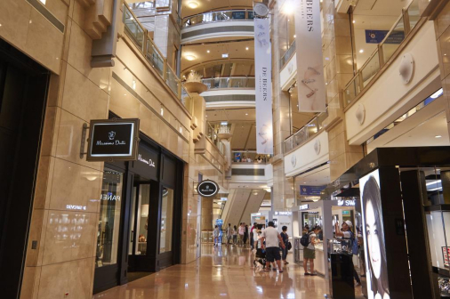

Attraction
観光名所
仇分

細い路地の階段に沿って建つ古い館に、堤防が灯るノスタルジックな風景。1989年、映画「非情城市」の舞台になったことをきっかけに再び注目を集めると共に、日本では、仇分の町中にある建物が2001年公開の映画「千と千尋の神隠し」に登場する湯婆婆の湯屋を彷彿させるとして話題に。日本統治時代に建てられた古い建物が残ることから、どこか懐かしい雰囲気が漂う町並みは日本人の琴線に触れ、今や台湾で行きたい観光地ナンバーワンとなりました。


 

おすすめ観光時間は幻想的な夕暮れがねらい目
15:00～19:00
台北101


高さは509.2m 地下5階＋地上101階からなり、名前の由来にもなっている。エレベーターは東芝エレベーター製で、毎分1.010メートル（時速60.6キロメートル）の速さで上昇でき、地上1階から展望台のある89階（地上382.2メートル）まで39秒で到達する。展望台、オフィス、レストラン、ショッピングモールなどが入る台湾を代表するランドマークタワー。有名なカウントダウンパーティーをはじめ節目に合わせたライトアップを行っている。
 

 


おすすめ観光時間は展望台営業時間帯
11:00～19:00
Night Market
夜市
台北市観光の夜の目玉といえば、なんと言っても夜市（ナイトマーケット）があげられます。毎日市内の各所でひらかれ、夕方から夜遅くまで多くの人々で賑わっています。絶品B級グルメ・小吃からファッション、ゲームといったお店が集まっています。
Access
アクセス
交通手段
- ■MRT（地下鉄）：（初乗り20元）
- 乗り方は日本の地下鉄とほぼ同じ。
改札を通る時には、切符・ICカード共にタッチ。台北MRTは全て各駅停車。 - 乗り方は日本の地下鉄とほぼ同じ。改札を通る時には、切符・ICカード共にタッチ。台北MRTは全て各駅停車。
- ■バス：（初乗り15元）
-
バス停は、バス停のポールが立っているだけ、大通りでは車道の真ん中のバスレーン沿いにあります。乗りたい場合、バスに向かっててを挙げます。
乗車して、現金で払う場合は運転手に行先を告げて運賃箱にお金を入れます。 - バス停は、バス停のポールが立っているだけ、大通りでは車道の真ん中のバスレーン沿いにあります。乗りたい場合、バスに向かって手を挙げます。乗車して、現金で払う場合は運転手に行先を告げて運賃箱にお金を入れます。
- ■タクシー：（初乗り70元）
- 市内の移動で気軽に使う事が出来ます。MRTなどが運行しない真夜中や早朝の移動にも便利です。新幹線の駅や有名観光地などにはタクシー乗り場が準備されているので、そこから乗りましょう。ホテルならフロントで呼んでもらいます。
- 市内の移動で気軽に使うことが出来ます。MRTなどが運行しない真夜中や早朝の移動にも便利です。新幹線の駅や有名観光地などにはタクシー乗り場が準備されているので、そこから乗りましょう。ホテルならフロントで呼んでもらいます。
- ■EASYCARD（悠遊カード）：（販売額100元）
-
現金をチャージして使うことが出来る交通系ICカード
台北旅行の際に手に入れておくと便利です
MRT・バス・台湾鉄道などで使用することができ、
切符を買う手間がなく、運賃が割引（MRTは二割引き）になります。 - 現金をチャージして使うことが出来る交通系ICカード。台北旅行の際に手に入れておくと便利です。MRT・バス・台湾鉄路などで使用することができ、切符を買う手間がなく、運賃が割引（MRTは二割引き）になります。